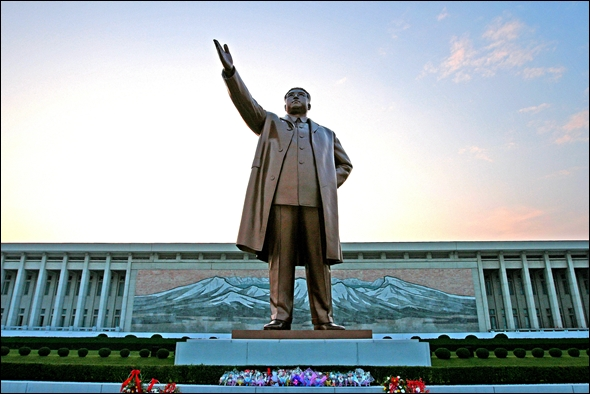

북한
조선민주주의인민공화국(朝鮮民主主義人民共和國, 영어: Democratic People's Republic of Korea; DPRK)은 동아시아의 조선반도(한반도)의 북반부를 통치하는 국가다.수도이자 최대 도시는 평양직할시이다. UN이 추정하는 인구는 2019년 기준 약 2,550만 명이다. 공용어는 조선어(한국어)이며, 평양을 중심으로 이룩됨을 내세운 문화어를 표준어로 삼는다. 대한민국 헌법에 의하면 대한민국 영토는 한반도와 부속영토로 하므로 대한민국 입장에서는 조선민주주의인민공화국은 반국가단체이자 조선민주주의인민공화국의 현 실효지역은 미수복영토이다. 조선민주주의인민공화국 국내에서는 자국을 조선(朝鮮), 공화국, 조국, 혹은 북조선이라고 지칭한다. 대한민국에서는 건국 때부터 국무원 고시에 의하여 확연한 구분을 위해 조선이란 명칭을 금지하고 북한(北韓)이라는 명칭만 쓴다.
1945년 제2차 세계 대전이 끝나고, 조선반도의 북위 38도 이북 지역에서 소련군에 의해 군정이 실시되었으며, 1946년 2월 북조선림시인민위원회가 수립되었다. 그로부터 2년 뒤인 1948년에는 '조선반도 총선거'에 기초하여 김일성을 수상, 박헌영 · 홍명희 등을 부수상으로 하여 1948년 9월 9일, 국호 '조선민주주의인민공화국'으로 사회주의 이념의 정부가 공식 출범하였다. 그러나 현재까지 대한민국, 일본의 정부는 이들의 정부 출범을 합법적이라고 보지 않아, 조선민주주의인민공화국을 명시적으로는 합법적인 주권 국가로 인정하지 않는다. 조선민주주의인민공화국 내각 또한 자신을 조선반도의 유일한 합법적 정부로 여긴다.
통치 형태는 형식상 다당제이지만 조선로동당의 강령에 반대하는 당이 없는 관계로 사실상 1당 독재 국가이다. 대부분의 국가에서 사실상 전제군주제 국가로 본다. 초대 최고지도자 김일성은 한국 전쟁, 8월 종파 사건 등을 거쳐 정적을 제거하여 수령 중심 정치 체제를 완성하였다. 그의 자손인 김정일, 김정은은 차례로 집권를 하며 선대의 수령주의를 이어받은 정치를 펼쳤다. 이 체제는 '주체사상'이라는, 김일성 일가와 그들의 당인 조선로동당의 통치를 정당화하는 이념으로 대표된다.
분단 이후부터 현재까지 김일성 일가의 의지에 따라, '조선이 없는 지구는 깨버려야 한다'는 김정일의 언급, '수령결사옹위정신', '자력갱생'으로 대표되는 강경한 수령 중심의 체제의 성립과 유지 의지를 대내외적으로 보여왔다. 이를 위해 경제 개방을 포함한 외부와의 전면적 교류를 꺼려 외부에서 이 국가의 상황을 자세히 알기 어렵다. 단, 체제 유지를 위해 군사 부문에 많은 지출을 하고 있는 것으로 추정되며, 인권에 대한 제약이 현대의 다른 어떤 국가에서도 찾기 힘들 정도로 크다는 추측이 있다. 비정부기구 휴먼라이트워치가 조선민주주의인민공화국을 전세계에서 가장 억압적인 국가로 소개하듯 체제 유지 목적을 위한 주민들에 대한 외부 정보 유입의 차단, 종교의 자유 박탈, '성분'이라는 사실상 신분제 도입, 정치적 반대의 무조건적 금지 등 강한 기본권 제한이 있다는 의혹이 이 국가의 외부에서 광범위하게 제기된다.
조선민주주의인민공화국 정부는 이런 기본권 제한을 부인하지만 북한이탈주민의 증언, 내부 음성 자료의 유출로 이 의혹이 뒷받침되고 있다. 이는 유엔총회 차원에서 2005년부터 2019년까지 인권 결의안이 채택된 이유 중 하나다. 이런 체제 유지 시도에 대한 부작용으로 고조선부터 일제강점기라는 같은 역사를 공유하는 국가인 대한민국은 물론 구 공산권 국가에 비해서도 빈곤이 만연해지고, 그 부조차 소수의 지배계층을 중심으로 분배되어 다수의 주민들의 빈곤과 삶의 질 악화로 이어진다는 비판이 이 국가를 관찰하는 시각에서 제기된다. 이 국가의 정부는 이를 부인한다.
The NorthKorea Leader Team

조선로동자당
조선로동당은 조선민주주의인민공화국의 유일 집권정당이다. 한자 표기는 "로동당"이지만, 영문 표기로는 Workers' Party of Korea, 즉 "조선로동자당"이다.
국무위원회
조선민주주의인민공화국 국무위원회(朝鮮民主主義人民共和國國務委員會)는 조선민주주의인민공화국의 최고 통치 기관이자 조선민주주의인민공화국 정부의 권한에 속하는 중요정책을 심의하는 최고 정책 심의기관, 국가 관리 기관이다 그리고 국가의 대표 직책는 국무위원장이다.
조선인민군
조선인민군은 조선로동당의 군대를 가리키는 말이다. 조선로동당의 당군이지만 사실상 조선민주주의인민공화국의 국가 군대의 성격을 갖는다. 조선인민군은 육군, 해군, 공군, 전략군과 특수작전군을 인민군 총참모장이 지휘하는 단일종합군체제이다.